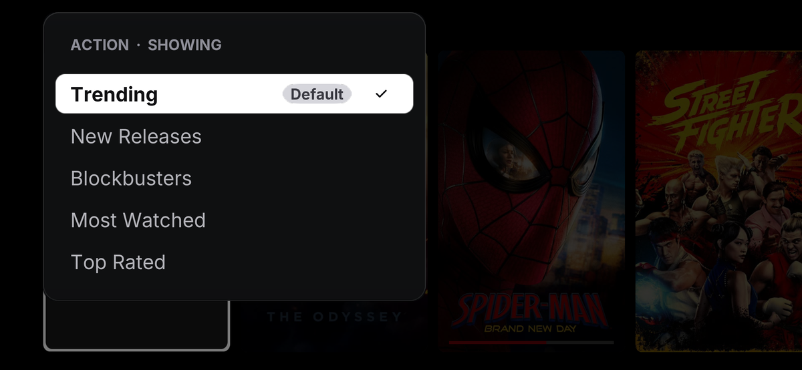
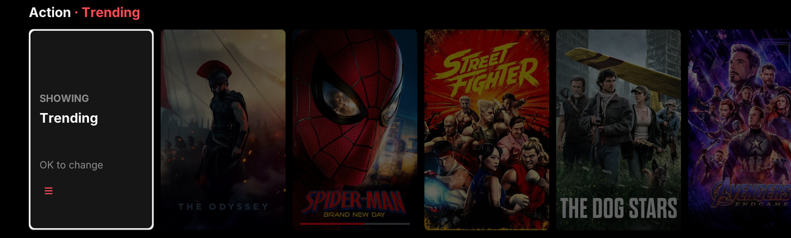
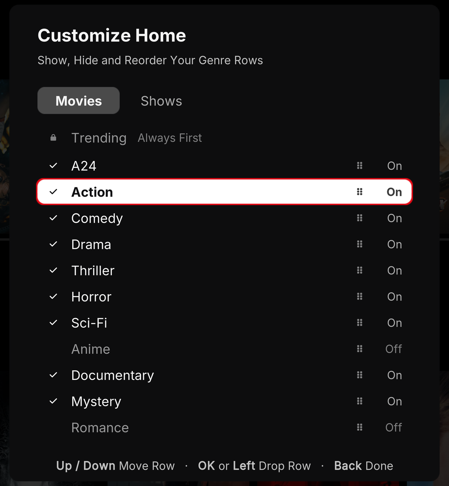
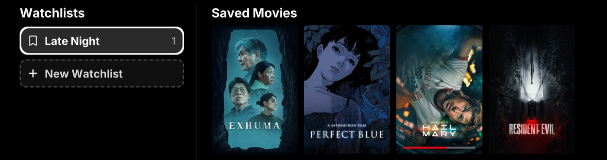
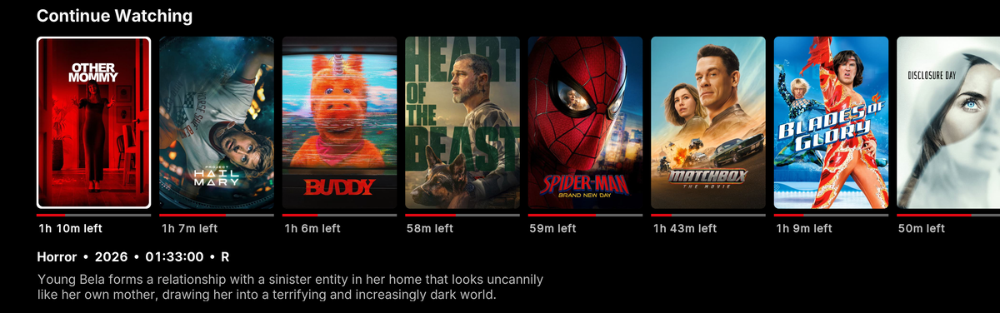
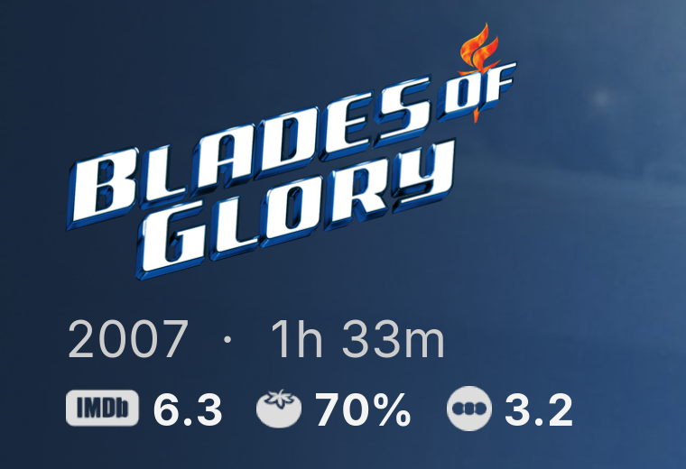
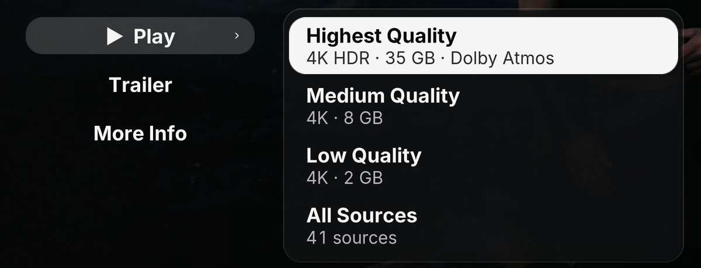
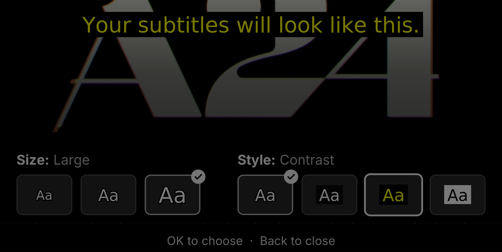

Showing Tile
Each genre row can show a different list, and keeps its choice.

- Movies
- Trending (Default), New Releases, Blockbusters, Most Watched, Top Rated.
- Shows
- Trending (Default), New Series, Most Watched, Top Rated, Complete Series.
- Per Row
- Each row keeps its choice, and its More Titles grid shows the same list.

Home Rows

- Customize Home
- Choose which genre rows appear and in what order, separately for Movies and Shows. Rows that are off don’t load, so the home page opens faster.
- Watchlists
- Save titles to as many named watchlists as you like. They appear in My Lists next to your saved movies and shows.
- Continue Watching
- The first row on Movies and Shows, with a progress bar and the time left or the next episode.


Ratings
IMDb, Rotten Tomatoes and Letterboxd ratings on title pages. They need a free MDbList key, set from the gear.

Playback

- Play and Quality
- Play starts the best 4K source automatically (Dolby Vision or HDR first). Highest, Medium and Low Quality choices, and the full source list, are one button away.
- Skip Intro
- A Skip Intro button appears during an episode’s intro.
- Subtitles
- Subtitle size and style, with a live preview of how they’ll look.

Security
Before this release, the published repository and every add-on zip were audited by an AI security review (Fable 5.2 & Astra). It found no passwords, tokens or personal sign-ins in the files and no telemetry. It also found issues that release 4 fixes: POV's source checks keep their results, including playable links, on the device for a short time; POV's optional log upload and some sign-in steps can include service keys or links; and some network requests have no time limit.
ChadFlix is mostly a visual change: a reworked skin plus small changes to POV for the home rows and play button. It adds no new places your Shield connects to. Every connection uses HTTPS, so others on your network can't read it.
- TMDb (The Movie Database): posters, descriptions and genre lists. Receives which title or list is shown; no account, no personal details.
- Trakt: Trending, Most Watched and similar rows. Receives which public list is loaded; your watch history only if you choose to sign in to Trakt.
- Your scrapers and Real-Debrid (POV, unchanged): receive the title being checked. Opening a movie page starts this check, so they see the titles you browse, not only the ones you play.
TMDb and Trakt are the same services POV and TMDb Helper already used before ChadFlix.
As with any third-party Kodi repository, installing it means trusting its publisher with updates, and the install steps turn on Unknown sources and Any repositories. Set both back after installing: first Update official add-ons from to Official repositories only (default), then Unknown sources off. In the other order the first setting stays on Any repositories. ChadFlix keeps updating from its own repository either way.
Install
In Kodi on the Shield, about 10 minutes and 240 MB. This page is also the Kodi source you add in step 2.
Before you start: you need Kodi 21 and POV already installed, and your own Real-Debrid account.
Real-Debrid allows one IP address at a time. Streaming on two internet connections at once can get the account flagged.
Allow Outside Add-ons
Settings → System → Add-ons: turn on Unknown sources (Yes on the warning) and set Update official add-ons from to Any repositories. Both are for the install only; set them back afterwards (see Security).
Add the Source
Settings → File manager → Add source → <None>: type the address exactly, OK, name it
chadflix, OK.Install the Repository
Settings → Add-ons → Install from zip file → chadflix → repository.chadflix-1.0.1.zip.
Install the Setup
Install from repository → ChadFlix Repository → Program add-ons → ChadFlix Setup → Install. OK on the list of add-ons; No if Kodi offers to switch skin.
Run the Setup
Add-ons → Program add-ons → ChadFlix Setup → Set up ChadFlix. YouTube is optional. Choose Switch (the setup answers “Keep skin?” itself), then Close Kodi and open it again.